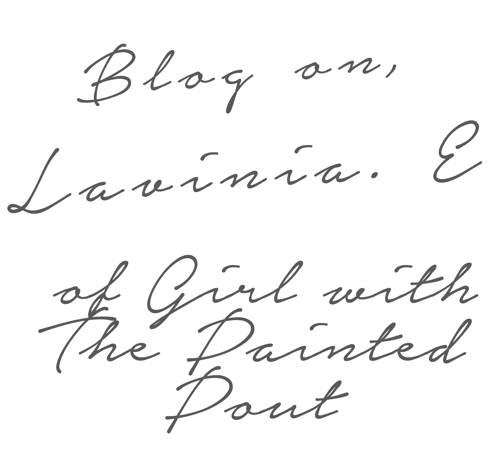

Girl with The Painted Pout by Lavinia E.
Lavinia E launched Girl with The Painted Pout needing an outlet and creative place to express her opinions and thoughts on fashion and style. She shies away from the standard photo-heavy style-blog rule and instead focuses on creative writing. Ms. Girl with The Painted Pout loves classic brick red (lipstick) and doesn’t do glitter. She also loves to tweet. Learn more about Lavinia with Blogspotter.
Tell us about Girl with The Painted Pout: what’s the concept behind your blog? I have always been a writer. When I was a little girl, I filled up composition notebooks with stories and poetry. When I began to discover fashion blogs, I fell in love with the idea of having a personal space online to express your style. After a few months of blogging as a personal style blogger, I grew extremely bored. Like, deadly bored. I needed more of an outlet and a creative place. I decided to try and be a bit different and create a style column instead. Writing + fashion = my dream job.
Your blog really focuses on fashion writing, veering away from the standard personal style that you see in many fashion blogs. Tell us a little bit about your approach to this. I think with how many blogs there are now, you really have to veer out of your comfort zone and try something different! Something unique to get people wondering and interested. Otherwise, it blends into the background.
How do you get inspired? By reading mostly. Vogue, novels, poems. I’m a big fan of Bukowski and Stacey Duguid. And mood boards, whether that be on tumblr or in print magazines.
What did you study as an undergraduate? Do you find that your degree has helped you maintain your blog (in any capacity)? I’m currently still an undergrad, actually! I study creative writing and yes, it has helped more than I ever thought. It’s taught me how to be a bit more daring as well as artistic.
Who’s your favorite blogger in the fashion/style blogosphere? Such a tough question! I love so many: Love Fashion Squad, The Haute Pursuit and Man Repeller. I’m also falling in love with Garance.
Do you use social media to further the reach of the Girl with The Painted Pout brand? I do. I find that tweeting with others in similar ranks and aspirations bring more readers as well as inspiration for new posts. Google Plus is wonderful for its community aspects and I adore tumblr for quick visuals.
Personally, what’s your favorite social media platform? Twitter, definitely.
"I find that tweeting with others in similar ranks and aspirations bring more readers as well as inspiration for new posts." — Lavinia E.
Lipstick: cherry red or brick red? Brick red. A classic.
Nailpolish: jet black or nude coated with chunky glitter? Nude without glitter. I don’t do glitter.
What’s your favorite accessory in your wardrobe right now? I’ve been obsessed with my Zac Posen crossbody as well as my vintage gold bracelets I found at a Brooklyn market.
Has anything super cool happened to you since you started blogging? This! Chatting with insiders is something I’ve always admired.
What’s one quote that you live by? “Don’t bend; don’t water it down; don’t try to make it logical; don’t edit your own soul according to the fashion. Rather, follow your most intense obsessions mercilessly.” —Franz Kafka
